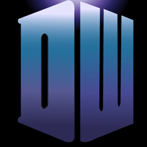

| Home | The Doctors | The Companions | The Villans |
|
|||
History
Doctor Who first appeared on BBC1 television at 17:16:20 GMT, eighty seconds after the scheduled programme time, 5:15 pm, on Saturday, 23 November 1963.[7][8] It was to be a regular weekly programme, each episode 25 minutes of transmission length. Discussions and plans for the programme had been in progress for a year. The head of drama, Canadian Sydney Newman, was mainly responsible for developing the programme, with the first format document for the series being written by Newman along with the head of the script department (later head of serials) Donald Wilson and staff writer C. E. Webber. Writer Anthony Coburn, story editor David Whitaker and initial producer Verity Lambert also heavily contributed to the development of the series.[9][note 1] The programme was originally intended to appeal to a family audience,[10] as an educational programme using time travel as a means to explore scientific ideas and famous moments in history. On 31 July 1963 Whitaker commissioned Terry Nation to write a story under the title The Mutants. As originally written, the Daleks and Thals were the victims of an alien neutron bomb attack but Nation later dropped the aliens and made the Daleks the aggressors. When the script was presented to Newman and Wilson it was immediately rejected as the programme was not permitted to contain any "bug-eyed monsters". The first serial had been completed and the BBC believed it was crucial that the next one be a success, however, The Mutants was the only script ready to go so the show had little choice but to use it. According to producer Verity Lambert; "We didn't have a lot of choice — we only had the Dalek serial to go ... We had a bit of a crisis of confidence because Donald [Wilson] was so adamant that we shouldn't make it. Had we had anything else ready we would have made that." Nation's script became the second Doctor Who serial – The Daleks (a.k.a. The Mutants). The serial introduced the eponymous aliens that would become the series' most popular monsters, and was responsible for the BBC's first merchandising boom.[11] The BBC drama department's serials division produced the programme for 26 seasons, broadcast on BBC 1. Falling viewing numbers, a decline in the public perception of the show and a less-prominent transmission slot saw production suspended in 1989 by Jonathan Powell, controller of BBC 1.[12] Although (as series co-star Sophie Aldred reported in the documentary Doctor Who: More Than 30 Years in the TARDIS) it was effectively, if not formally, cancelled with the decision not to commission a planned 27th series of the show for transmission in 1990, the BBC repeatedly affirmed that the series would return.[13] While in-house production had ceased, the BBC hoped to find an independent production company to relaunch the show. Philip Segal, a British expatriate who worked for Columbia Pictures' television arm in the United States, had approached the BBC about such a venture as early as July 1989, while the 26th series was still in production.[13] Segal's negotiations eventually led to a Doctor Who television film, broadcast on the Fox Network in 1996 as a co-production between Fox, Universal Pictures, the BBC and BBC Worldwide. Although the film was successful in the UK (with 9.1 million viewers), it was less so in the United States and did not lead to a series.[13] Licensed media such as novels and audio plays provided new stories, but as a television programme Doctor Who remained dormant until 2003. In September of that year,[14] BBC Television announced the in-house production of a new series after several years of attempts by BBC Worldwide to find backing for a feature film version. The executive producers of the new incarnation of the series were writer Russell T Davies and BBC Cymru Wales head of drama Julie Gardner. Doctor Who finally returned with the episode "Rose" on BBC One on 26 March 2005.[15] There have since been eight further series in 2006–2008 and 2010–2014, and Christmas Day specials every year since 2005. No full series was filmed in 2009,[16] although four additional specials starring Tennant were made. In 2010, Steven Moffat replaced Davies as head writer and executive producer.[17] The 2005 version of Doctor Who is a direct plot continuation of the original 1963–1989 series,[note 2] as is the 1996 telefilm. This differs from other series relaunches that have either been reimaginings or reboots (for example, Battlestar Galactica and Bionic Woman) or series taking place in the same universe as the original but in a different period and with different characters (for example, Star Trek: The Next Generation and spin-offs).[18] The programme has been sold to many other countries worldwide (see Viewership). |